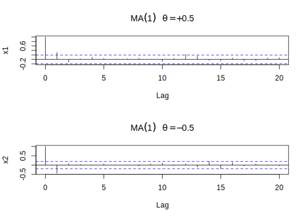

Capítulo 4 Modelos AR
Los modelos autoregresivos están basados en la idea de que el valor actual de la serie \(x_t\) se puede explicar como una función de \(p\) valores pasados \(x_{t-1},x_{t-2},\ldots,x_{t-p}\) donde \(p\) determina el número de pasos en necesarios para predecir el valor actual. Una parte de las series de tiempo económicas y financieras suelen ser caracterizadas por los modelos autorregresivos. Entre los principales ejemplos de las finanzas tenemos valoración de precios y de dividendos, las tasas reales de cambio, tasas de interés y los diferenciales de tipos de interés (spreads).
Definición 4.1 Un modelo autoregresivo de orden \(p\), abreviado \(AR(p)\) es de la forma
\[\begin{equation} x_t=\phi_1x_{t-1}+\phi_2x_{t-2}+\cdots+\phi_px_{t-p}+w_t, \tag{4.1} \end{equation}\]donde \(x_t\) es estacionario, \(\phi_1\phi_2,\ldots,\phi_p\) son constantes (\(\phi_p\neq0\)). A menos que se declare lo contrario, se asume que \(w_t\) es un ruido blanco gaussiano de media cero y varianza \(\sigma_w^2\). La media de \(x_t\) es (4.1) es cero. Si la media \(\mu\) de \(x_t\) no es cero, reemplazamos \(x_t\) por \(x_t-\mu\) en (4.1), es decir
\[x_t-\mu=\phi_1(x_{t-1}-\mu)+\phi_2(x_{t-2}-\mu)+\cdots+\phi_p(x_{t-p}-\mu)+w_t\]
o escribimos
\[\begin{equation} x_t=\alpha+\phi_1x_{t-1}+\phi_2x_{t-2}+\cdots+\phi_px_{t-p}+w_t, \tag{4.2} \end{equation}\] donde \(\alpha=\mu(1-\phi_1-\phi_2-\cdots-\phi_p)\).Note que (4.2) es similar al modelo de regresión dado en (2.54) y por consiguiente el término autoregresión. Sin embargo, se presentan algunas dificultades técnicas para la aplicación de este modelo, porque los regresores \(x_{t-1},x_{t-2},\ldots,x_{t-p}\) son aleatorios, mientras que \(x_t\) se asume fijo. Una forma más útil se deriva de usar el siguietne operador de cambio dado por (2.42). Para escribir el modelo \(AR(p)\) como
\[\begin{equation} (1-\phi_1B-\phi_2B^2-\cdots-\phi_pB^p)x_t=w_t \tag{4.3} \end{equation}\]o más conciso como
\[\begin{equation} \phi(B)x_t=w_t. \tag{4.4} \end{equation}\]Las propiedades de \(\phi(B)\) son importantes para resolver (4.4). Esto nos lleva a la siguiente definición.
4.1 Modelo AR(1)
Iniciaremos el estudio de los modelos \(AR\) considerando el modelo de primer orden \(AR(1)\), dado por \(x_t=\phi x_{t-1}+w_t\). Iterando el operador de cambio \(k\) veces, obtenemos
\[\begin{eqnarray*} x_t &=& \phi x_{t-1}+w_t = \phi(\phi x_{t-2}+w_{t-1})+w_t \\ &=& \phi^2x_{t-2}+\phi w_{t-1}+w_t \\ &\vdots& \\ &=& \phi^kx_{t-k}+\sum_{j=0}^{k-1}\phi^jw_{t-j}. \end{eqnarray*}\]Este método sugiere que por iteración continua del operador de cambio, siempre que \(|\phi|<1\) y \(x_t\) sea estacionario, podemos representar un modelo \(AR(1)\) como un proceso lineal dado por4
\[\begin{equation} x_t \sum_{j=0}^{\infty}\phi^jw_{t-j} \tag{4.6} \end{equation}\]El proceso \(AR(1)\) definido en (4.6) es estacionario con media
\[\mathbb{E}(x_t) = \sum_{j=0}^{\infty}\phi^j\mathbb{E}(w_{t-j})=0,\]
y la función de autocovarianza es
\[\begin{eqnarray} \gamma(h) &=& Cov(x_{t+h},x_t) \nonumber \\ &=& \mathbb{E}\left[\left(\sum_{j=0}^{\infty}\phi^jw_{t+h-j}\right) \left(\sum_{k=0}^{\infty}\phi^kw_{t-k}\right)\right] \nonumber \\ &=& \sigma_w^2\sum_{j=0}^{\infty}\phi^j\phi^{j+h} = \sigma_w^2\phi^h\sum_{j=0}^{\infty}\phi^{2j} \nonumber \\ &=& \frac{\sigma_w^2\phi^h}{1-\phi^2}, h>0 \tag{4.7} \end{eqnarray}\]Recuerde que \(\gamma(h)=\gamma(-h)\) de modo que basta presentar la función de autocovarianza para \(h\geq0\).
Si en (4.7), hacemos \(h=0\), obtenemos la varianza del proceso \(AR(1)\), siendo esta
\[Var(x_t)=\frac{\sigma_w^2}{1-\phi^2},\]
asumiendo que \(\phi_1^2<1\). El requisito de que \(\phi_1^2<1\) resulta del hecho de que la varianza de una variable aleatoria es acotada y no negativa. Por consiguiente, la estacionaridad de un modelo \(AR(1)\) implica que \(-1<\phi_1<1\). Pero si \(-1<\phi_1<1\), entonces por (4.6) y la independencia de \(\{w_t\}\) se puede demostrar que la media y la varianza de \(x_t\) son finitas. Además, por la desigualdad de Cauchy-Schwartz todas las autocovarianzas de \(x_t\) son finitas. Por lo tanto, el modelo \(AR(1)\) es estacionario. En resumen, una condición necesaria y suficiente para que un proceso \(AR(1)\) sea estacionario es \(|\phi_1|<1\).
De (4.7) la ACF de un modelo \(AR(1)\) es
\[\begin{equation} \rho(h) = \frac{\gamma(h)}{\gamma(0)} = \phi^h, \quad h>0 \tag{4.8} \end{equation}\]y \(\rho(h)\) satisface la recursión
\[\begin{equation} \rho(h) = \phi\rho(h-1)\text{, para }h=1,2,\ldots. \tag{4.9} \end{equation}\]Las ecuaciones (4.8) y (4.9) indican que la ACF de un modelo \(AR(1)\) estacionario tiene un decaimiento exponencial con tasa igual a \(\phi_1\). Si \(\phi_1>0\) el decaimiento es constante. Si por el contrario, \(\phi_1<0\) entonces el decaimiento es compuesto y se presenta de forma alternante con tasa \(\phi_1^2\). Para tener una idea de esto, consideremos los modelos autoregresivos de orden 1 simulados, para distintos valores de \(\phi_1\).
# Coeficientes phi
phi1=0.9
phi2=-0.8
phi3=0.4
phi4=-0.5
# Ruido blanco gaussiano
w=rnorm(100,0,1)
# Series AR(1)
ar1_1=filter(w,filter = phi1,method = "recursive")
ar1_2=filter(w,filter = phi2,method = "recursive")
ar1_3=filter(w,filter = phi3,method = "recursive")
ar1_4=filter(w,filter = phi4,method = "recursive")
# Graficos
par(mfrow=c(2,2))
plot.ts(ar1_1, col="blue",type = "l",
main = "AR(1) con phi=0.9",xlab="t",ylab="x_t")
plot.ts(ar1_2, col="blue",type = "l",
main = "AR(1) con phi=-0.8",xlab="t",ylab="x_t")
plot.ts(ar1_3, col="blue",type = "l",
main = "AR(1) con phi=0.4",xlab="t",ylab="x_t")
plot.ts(ar1_4, col="blue",type = "l",
main = "AR(1) con phi=-0.5",xlab="t",ylab="x_t")
Figura 4.1: Simulaciones de procesos autoregresivos de orden 1, AR(1), para distintos valores de phi
A continuación mostramos las funciones de autocovarianzas de las series AR(1) simuladas anteriormente
par(mfrow=c(2,2))
acf(ar1_1,type = "covariance", main="ACF de la Serie AR(1) con phi=0.9")
acf(ar1_2,type = "covariance", main="ACF de la Serie AR(1) con phi=-0.8")
acf(ar1_3,type = "covariance", main="ACF de la Serie AR(1) con phi=0.4")
acf(ar1_4,type = "covariance", main="ACF de la Serie AR(1) con phi=-0.5")
Figura 4.2: Funciones de autocovarianzas para las series AR(1) simuladas
Ejemplo 4.1 (Modelo AR Explosivo y causalidad) Ya hemos descritos las condiciones para que un proceso \(AR(1)\) sea estacionario. Nos preguntamos si existe un proceso AR(1) estacionario con \(|\phi|>1\). Tal proceso será llamado explosivo porque los valores de la serie de tiempo se hacen grande en magnitud rápidamente. Claramente, porque \(|\phi|^j\) crece sin acotación cuando \(j\to\infty\). Por otra parte, \(\sum_{j=0}^{k-1}\phi^jw_{t-j}\) no converge (en media cuadrado) cuando \(k\to\infty\), de modo que la idea intuitiva usada para obtener (4.6) no funciona acá directamente. Podemos modificar el argumento para obtener un modelo estacionario como sigue. Escribimos \(x_{t+1}=\phi x_t+w_{t+1}\) en cuyo caso
\[\begin{eqnarray} x_t &=& \phi^{-1}x_{t+1}-\phi^{-1}w_{t+1}=\phi^{-1}(\phi^{-1}x_{t+2}-\phi^{-1}w_{t+2})-\phi^{-1}w_{t+1} \nonumber\\ &\vdots& \nonumber\\ &=& \phi^{-1}x_{t+k}-\sum_{j=1}^{k-1}\phi^{-1}w_{t+j},\tag{4.10} \end{eqnarray}\]iterando \(k\) pasos hacia adelante. Porque \(|\phi|^{-1}<1\), este resultado sugiere el modelo AR(1) estacionario que depende del futuro \[x_t=-\sum_{j=1}^{\infty}\phi^{-1}w_{t+j}\]
Podemos verificar que este modelo es estacionario y de la forma AR(1), \(x_t=\phi x_{t-1}+w_t\). Desafortunadamente, el modelo es inútil porque requiere conocer el futuro para predecir el futuro. Cuando un proceso no depende del futuro, tal como un AR(1) con \(|\phi|<1\), decimos que el proceso es causal. En el caso explosivo de este ejemplo, el proceso es estacionario, pero también depende del futuro, y no causal.4.2 Modelo AR(2)
Un proceso \(AR(2)\) tiene la forma general
\[\begin{equation} x_t = \alpha + \phi_1 x_{t-1} + \phi_2 x_{t-2} + w_t \tag{4.11} \end{equation}\]siendo \(\alpha = \mu(1-\phi_1-\phi_2)\), con \(\phi_2\neq 0\). Podemos calcular su función de media
\[\begin{eqnarray*} \mathbb{E}(x_t) &=& \mathbb{E}(\alpha + \phi_1 x_{t-1} + \phi_2 x_{t-2} + w_t) \\ &=& \alpha+\phi_1\mathbb{E}(x_{t-1})+\phi_2\mathbb{E}(x_{t-2}) \end{eqnarray*}\]Por estacionalidad, se tiene que \(\mathbb{E}(x_t)=\mathbb{E}(x_{t-1})=\mathbb{E}(x_{t-2})\), luego
\[\mathbb{E}(x_t)(1-\phi_1-\phi_2) = \alpha\] Así, \(\mathbb{E}(x_t) = \frac{\alpha}{1-\phi_1-\phi_2}\), siempre que \(\phi_1+\phi_2\neq1\). Usando \(\alpha=(1-\phi_1-\phi_2)\mu\) podemos reescribir el proceso \(AR(2)\) como
\[x_t-\mu = \phi_1(x_{t-1}-\mu)+\phi_2(x_{t-2}-\mu)+w_t.\]
Multiplicando por \(x_{t-h}-\mu\), tenemos
\[(x_{t-h}-\mu)(x_t-\mu) = \phi_1(x_{t-h}-\mu)(x_{t-1}-\mu) + \phi_2(x_{t-h}-\mu)(x_{t-2}-\mu) + (x_{t-h}-\mu)w_t.\]
Tomando valor esperado y usando el hecho de que \(\mathbb{E}[(x_{t-h}-\mu)w_t]=0\), para \(h>0\), obtenemos
\[\begin{equation} \gamma(h) = \phi_1\gamma(h-1)+\phi_2\gamma(h-2) \text{, para }h>0. \tag{4.12} \end{equation}\]Este último resultado se conoce como la ecuación de momentos de un proceso estacionario \(AR(2)\). Dividiendo (4.12) por \(\gamma(0)\), tenemos la propiedad
\[\begin{equation} \rho(h) = \phi_1\rho(h-1)+\phi_2\rho(h-2)\text{, para }h>0 \tag{4.13} \end{equation}\]para la ACF de \(x_t\). En particular, para paso 1 (\(h=1\)) la ACF satisface
\[\rho(1) = \phi_1\rho(0)+\phi_2\rho(-1) = \phi_1+\phi_2\rho(1)\]
Por lo tanto, para un proceso \(AR(2)\) estacionario \(x_t\), tenemos
\[\begin{eqnarray*} \rho(0) &=& 1 \\ \rho(1) &=& \frac{\phi_1}{1-\phi_2} \\ \rho(h) &=& \phi_1\rho(h-1)+\phi_2\rho(h-2),\quad h\geq2 \end{eqnarray*}\]El resultado de la ecuación (4.13) nos dice que la ACF de un proceso estacionario \(AR(2)\) satisface la ecuación en diferencias de segundo orden
\[\begin{equation} (1-\phi_1B-\phi_2B^2)\rho(h) = 0 \tag{4.14} \end{equation}\]donde \(B\) es el operador definido en (2.42). La ecuación (4.14) determina las propiedades de la ACF de un proceso \(AR(2)\) estacionario. También determina el comportamiento de los pronósticos de \(x_t\). Correspondiendo a la ecuación en diferencias anterior, existe una ecuación polinómica de segundo orden
\[\begin{equation} x^2-\phi_1x-\phi_2=0 \tag{4.15} \end{equation}\]Las soluciones de esta ecuación son las raíces características de un proceso \(AR(2)\) y estas son
\[x=\frac{\phi_1\pm\sqrt{\phi_1^2+4\phi_2}}{2}\]
Denotamos las dos raíces por \(r_1\) y \(r_2\). Si ambos son reales, entonces la ecuación en diferencias de segundo orden la podemos factorizar como
\[(1-r_1B)(1-r_2B)\]
y el proceso \(AR(2)\) lo podemos considerar como un proceso \(AR(1)\) operando sobre otro proceso \(AR(1)\).
La ACF de \(x_t\) es entonces una mezcla de dos decaimientos exponenciales. Pero si \(\phi_1^2+4\phi_2<0\), entonces \(r_1\) y \(r_2\) son raíces complejas conjugadas, y el gráfico de la ACF de \(x_t\) mostrará un amortiguamiento de senos y cosenos.
En aplicaciones financieras y económicas, las raíces caracteríticas complejas son importantes. Dan lugar al comportamiento de los ciclos económicos. Por lo tanto, es común que los modelos económicos de series de tiempo tengan raíces características de valor complejo. Para un proceso \(AR(2)\) dado por (4.11) con raíces características complejas, la longitud promedio de un ciclo estocástico es
\[k=\frac{360°}{\arccos(\phi_1/2\sqrt{-\phi_2})},\]
donde el arcocoseno está expresado en grados.
La figura siguiente muestra la ACF de 4 procesos estacionarios \(AR(2)\). Los procesos \(AR(2)\) mostrados son:
\(x_t=1.2x_{t-1}-0.35x_{t-2}+w_t\)
\(x_t=0.6x_{t-1}-0.4x_{t-2}+w_t\)
\(x_t=0.2x_{t-1}+0.35x_{t-2}+w_t\)
\(x_t=-0.2x_{t-1}+0.35x_{t-2}+w_t\)

Figura 4.3: ACF de 4 procesos estacionarios AR(2)

Figura 4.3: ACF de 4 procesos estacionarios AR(2)
La serie (b) tiene raíces características complejas, en efecto
\[\phi_1^2+4\phi_2=(0.6)^2+4\times(-0.4)-1.24<0\]
Se puede notar que n el gráfico de la ACF que este exhibe un comportamiento de ondas de senos y cosenos. Los otros 3 procesos \(AR(2)\) tienen raíces características reales, por lo que las ACF decaen exponencialmente. La condición de estacionaridad de un proceso \(AR(2)\) es que los valores absolutos de sus raíces características sean menor que uno, esto es \(|\phi_1|<1, |\phi_2|<1\). Bajo esta condición, la ecuación recursiva (4.13) asegura que la ACF del proceso converge a cero cuando el salto \(h\) crece. Esta propiedad de convergencia es una condición necesaria para una serie de tiempo estacionaria. De hecho, la condición también aplica para un proceso \(AR(1)\) donde la ecuación polinómica es \(x-\phi_1=0\). La raíz característica es \(x=\phi_1\), la cual debe ser menor que uno en módulo para que \(x_t\) sea estacionario. Como mostramos antes, para un proceso estacionario \(AR(1)\) la ACF es \(\rho(h)=\phi^h\), (4.8).
Así, la condición \(|\phi|<1\), asegura que \(\rho(h)=\phi^h\to0\), cuando \(h\to\infty\).
4.3 Procesos AR(p)
Los resultados de los procesos \(AR(1)\) y \(AR(2)\), los podemos generalizar a procesos \(AR(p)\). Así, la función de media del proceso \(AR(p)\) estacionario será
\[\begin{equation} \mathbb{E}(x_t) = \frac{\alpha}{1-\phi_1-\cdots-\phi_p} \tag{4.16} \end{equation}\]siempre que el denominador sea distinto de cero. La ecuación polinómica asociada al modelo es
\[\begin{equation} x^p-\phi_1x^{p-1}-\phi_2x^{p-2}-\cdots-\phi_p=0 \tag{4.17} \end{equation}\]la cual nos referimos como la ecuación característica del modelo. Si todas las raíces características de esta ecuación son menores qye uno en módulo, esto es \(|r_j|<1\), con \(j=1,\ldots,p\), entonces la serie \(x_t\) es estacionaria. Para un proceso \(AR(p)\) estacionario, la ACF satisface la ecuación en diferencias
\[(1-\phi_1B-\phi_2B^2-\cdots-\phi_pB^p)\rho(h)=0\text{, para }h>0.\]
El gráfico de la ACF de un proceso \(AR(p)\) estacionario mostrará una mezcla de ondas de senos y cosenos con decaimientos exponenciales dependiendo de la naturaleza de sus raíces características.
Ejemplo 4.2 Consideremos el modelo \(AR(3)\) de la forma
\[x_t=0.0047+0.35x_{t-1}+0.18x_{t-2}-0.14x_{t-3}+w_t.\]
Reescribiendo el proceso como
\[x_t-0.35x_{t-1}-0.18x_{t-2}+0.14x_{t-3}=0.0047+w_t\]
obtenemos la correspondiente ecuación en diferencias de orden 3,
\[(1-0.35B-0.18B^2+0.14B^3)=0\]
la cual podemos factorizar como
\[(1+0.52B)(1-0.87B+0.27B^2)=0\]
El primer factor \((1+0.52B)=0\), muestra u ndecaimiento exponencial en la ACF. Veamos ahora el segundo factor \((1-0.87B-(-0.27)B^2)=0\), tenemos que \(\phi_1^2+4\phi_2=(0.87)^2+4(-0.27)=-0.3231<0\). Por consiguiente la ACF mostrará un comportamiento en ondas de senos y cosenos.
xt<-arima.sim(list(order=c(3,0,0),ar=c(0.35,0.18,-0.14)),n=100)
par(mfrow=c(2,1))
plot(xt,type="l",main="Proceso AR(3)")
acf(xt)
En aplicaciones, se desconoce el orden \(p\) de una serie de tiempo autoregresiva, por lo que debe especificarse empíricamente. Esto se conoce como la determinación del orden de los modelos \(AR\). Existen dos enfoques generales para determinar el valor de \(p\). El primero es utilizar la función de autocorrelación parcial, y el segundo utilizar alguna función de criterio de información. En R existe una función para determinar el orden \(p\) de un proceso \(AR\), sin embargo vamos a estudiar primero los dos enfoques mencionados de manera de poder entender como funciona R al respecto.
4.4 Función de Autocorrelación Parcial
La función de autocorrelación parcial PACF (siglas en inglés: Partial Autocorrelation Function) de una serie de tiempo es una función de su ACF y es una herramienta útil para determinar el orden \(p\) de un modelo autoregresivo. Una manera simple pero efectiva de introducir la PACF es considerando los siguientes modelos \(AR\) en órdenes consecutivos:
\[\begin{eqnarray*} x_t &=& \phi_{0,1}+\phi_{1,1}x_{t-1}+w_{1t} \\ x_t &=& \phi_{0,2}+\phi_{1,2}x_{t-1}+\phi_{2,2}x_{t-2}+w_{2t} \\ x_t &=& \phi_{0,3}+\phi_{1,3}x_{t-1}+\phi_{2,3}x_{t-2}+\phi_{3,3}x_{t-3}+w_{2t} \\ \vdots & & \\ \end{eqnarray*}\]donde \(\phi_{0,j}, \phi_{i,j}, \{w_{jt}\}\) son respectivamente, el término constante, el coeficiente de \(x_{t-j}\) y el término de error del modelo \(AR(j)\). Estos modelos están en la forma de regresión lineal múltiple y se pueden estimar por mínimos cuadrados.
La estimación de \(\hat{\phi}_{1,1}\) de la primera ecuación se llama PACF muestral de paso 1 de \(x_t\). LA estimación de \(\hat{\phi}_{2,2}\) de la segunda ecuación es la PACF muestral de paso 2 de \(x_t\). La estimación \(\hat{\phi}_{3,3}\) de la tercera ecuación es la PACF muestral de paso 3 de \(x_t\), y así sucesivamente.
De la definición, la PACF de paso 2 muestra la contribución añadida de \(x_{t-2}\) a \(x_t\) sobre el modelo \(AR(1)\) \(x_t=\phi_0+\phi_1x_{t-1}+w_{1t}\). La PACF de paso 3 muestra la contribución añadida de \(x_{t-3}\) a \(x_t\) sobre un modelo \(AR(2)\), etc. Por lo tanto, para un modelo \(AR(p)\), la PACF de paso \(p\) no debería ser cero, sino que \(\hat{\phi}_{j,j}\) debería ser cercano a cero para todo \(j>p\). Esta propiedad será útil para determinar el orden \(p\). De hecho, bajo ciertas condiciones de regularidad, se puede demostrar que la PACF muestral de un proceso \(AR(p)\) tiene las siguientes propiedades:
\(\hat{\phi}_{p,p}\) converge a \(\phi_p\) cuando el tamaño \(N\) de la muestra tiende a infinito.
\(\hat{\phi}_{l,l}\) converge a cero para todo \(l>p\).
La varianza asintótica de \(\hat{\phi}_{l,l}\) es \(1/N\) para \(l>p\).
Estos resultados dicen que para una serie \(AR(p)\) la PACF muestral se corta en paso o salto \(p\).
Para concluir esta sección, destaquemos que tanto la función de autocorrelación (ACF) como la función de autocorrelación parcial (PACF) nos permiten determinar el orden de un modelo \(AR(p)\). El cuadro siguiente indica como usarlas
| ACF | PACF | |
|---|---|---|
| AR(p) | Disminución gradual | Corte en paso p |
Ejemplo 4.3 (La PACF de un AR(1) causal) Considere la PACF de un proceso AR(1) dado por \(x_t=\phi x_{t-1}+w_t\) con \(|\phi|<1\). Por definición, \(\phi_{1,1}=\rho(1)=\phi\). Para calcular \(\phi_{2,2}\) considere la regresión de \(x_2\) en \(x_1\), \(x_2^1=\beta x_1\). Minimicemos \(\beta\)
\[\mathbb{E}(x_2-\beta x_1)^2 = \gamma(0)-2\beta\gamma(1)+\beta^2\gamma(0).\]
Derivando e igualando a cero, tenemos \(\beta=\gamma(1)/\gamma(0)=\rho(0)=\phi\). Entonces \(x_2^1=\phi x_1\). Ahora, consideremos la regresión de \(x_0\) en \(x_1\), \(x_0^1=\beta x_1\). Nuevamente, minimizamos \(\beta\)
\[\mathbb{E}(x_0-\beta x_1)^2 = \gamma(0)-2\beta\gamma(1)+\beta^2\gamma(0).\]
Esta ecuación es la misma que la anterior, por lo que \(\beta=\phi\) y \(x_0^1=\phi x_1\). Por consiguiente, \(\phi_{22}=\text{corr}(x_2-\phi x_1,x_0-\phi x_1)\). Pero, note que
\[\text{cov}(x_2-\phi x_1,x_0-\phi x_1)=\gamma(2)-2\phi\gamma(1)+\phi^2\gamma(0)=0\]
porque \(\gamma(h)=\gamma(0)\phi^h\). Entonces \(\phi_{2,2}=0\).Ejemplo 4.4 (La PACF de un AR(p) causal) Sea \(x_t=\sum_{j=1}^{p}\phi_jx_{t-j}+w_j\) donde las raíces de \(\phi(z)\) están fuera del círculo unitario. En particular, \(x_h=\sum_{j=1}^{p}\phi_jx_{h-j}+w_h\). Cuando \(h>p\), la regresión de \(x_h\) en \(x_{h-1},x_{h-2},\ldots,x_1\) es
\[x_h^{h-1}=\sum_{j=1}^{p}\phi_jx_{h-j}\]
Este resultado se demostrará en la sección “Pronósticos” del capítulo “Modelos ARMA”.
Entonces, cuando \(h>p\),
\[\begin{eqnarray*} \phi_{hh} &=& \text{corr}(x_h-x_h^{h-1},x_0-x_0^{h-1}) \\ &=& \text{corr}(w_h,x_0-x_0^{h-1}) \end{eqnarray*}\]ya que, por causalidad \(x_0-x_0^{h-1}\) depende sólo de \(\{w_{h-1},w_{h-2},\ldots\}\). Cuando \(h\leq p\), \(\phi_{pp}\) no es cero y \(\phi_{11},\phi_{22},\ldots,\phi_{p-1,p-1}\) no son necesariamente ceros.
La figura 4.4 muestra las ACF y PACF del modelo AR(2) dado por
\[x_t=1.5x_{t-1}-0.75x_{t-2}+w_t.\]ACF=ARMAacf(ar=c(1.5,-0.75),ma=0,25)
PACF=ARMAacf(ar=c(1.5,-0.75),ma=0,25,pacf=T)
par(mfrow=c(1,2))
plot(ACF,type="h",ylim=c(-0.8,1),xlab="Salto")
abline(h=0)
plot(PACF,type="h",ylim=c(-0.8,1),xlab="Salto")
abline(h=0)Figura 4.4: Las ACF y PACF de un modelo AR(2) con phi_1=1.5 y phi_2=-0.75
4.5 Criterios de Información
Existen diversos criterios de información disponibles para determinar el orden \(p\) de un proceso autoregresivo. Todos ellos están basados en verosimilitud. El primer criterio ya lo definimos en 2.16
Definición 4.3 (Criterio de Información de Akaike (AIC)) El Criterio de Información de Akaike se define como
\[\begin{equation} AIC = \ln\hat{\sigma}_k^2+\frac{n+2k}{n} \tag{2.71} \end{equation}\] donde \(\hat{\sigma}_k^2\) es el estimador de máxima verosimilitud para la varianza, \(k\) es el número de parámetros en el modelo y \(n\) es el tamaño de la muestra5El Criterio de Información de Akaike (AIC) es una medida de la calidad relativa de un modelo estadístico, para un conjunto dado de datos. Como tal, el AIC proporciona un medio para la selección del modelo. El AIC maneja un trade-off6 entre la bondad de ajuste del modelo y la complejidad del modelo. Se basa en la entropía de información: se ofrece una estimación relativa de la información perdida cuando se utiliza un modelo determinado para representar el proceso que genera los datos.
El AIC no proporciona una prueba de un modelo en el sentido de probar una hipótesis nula, es decir el AIC puede decir nada acerca de la calidad del modelo en un sentido absoluto. Si todos los modelos candidatos encaja mal, el AIC nodará ningún aviso de ello. El valor de \(k\) que minimiza el AIC especifica el mejor modelo. La idea es que la minimización de \(\hat{\sigma}_k^2\) sea razonablemente objetiva, excepto que decrezca monótonamente cuando \(k\) crece. Por lo tanto, debemos penalizar la variación del error por un término proporcional al número de parámetros. La elección del término de penalización dado por (2.71) no es único.
En el criterio AIC definido en la ecuación (2.71), el sesgo es aproximado por el número de parámetros los cuales son constantes y no tienen variabilidad. Para el modelo de regresión, la corrección del sesgo el logaritmo de la verosimilitud se define como
Este modelo fue propuesto originalmente por N. Sugiura en el artículo “Further analysis of the data by Akaike’s information criterion and the finite corrections”. Communications in Statistics, Theory and Methods, Vol. 7, No. 1, pp. 13-26, 1978. Se tiene que el AICc es esencialmente el AIC con un término de penalización adicional para el número de parámetros. Nótese que cuando \(n\to\infty\), el término de penalización adicional converge a 0, y por lo tanto el AICc converge al AIC. De manera similar que en el AIC, se selecciona el modelo con el menor valor AICc.
SIC también llamado Criterio Bayesiano de Información (BIC) es un criterio para la selección de modelos. Se basa, en parte, en la función de probabilidad y está estrechamente relacionado con el Criterio de Información de Akaike (AIC). Cuando se hace ajuste de modelos, es posible aumentar la probabilidad mediante la adición de parámetros, pero esto puede resultar en sobreajuste. Tanto BIC como AIc resuelven este problema mediante la introducción de un término de penalización para el núemro de parámetros en el modelo, el término de penalización es mayor en el BIC que en el AIC.
El BIC fue desarrollado por Gideon E. Schwarz, quien dio un argumento bayesiano a favor de su adopción. Akaike también desarrolló su propio formalismo bayesiano, que ahora se conoce como la ABIC (siglas en inglés) por Criterio de Información Bayesiano de Akaike.
rec=ts(scan("data/recruit.txt"),start = 1950, frequency = 12)
par(mfrow=c(3,1))
plot(rec,type = "l", ylab = "", xlab = "meses", main = "Número de nuevos peces en el Pacífico Central (1950-1987)")
acf(rec,48)
pacf(rec,48)
4.6 Estimación de Parámetros.
Para un modelo \(AR(p)\) especificado por (4.1), el método de mínimos cuadrados condicional, el cual inicia con \(p+1\) observaciones, se usa a menudo para estimar los parámetros. Específicamente, condicionando sobre las primeras \(p\) observaciones, tenemos
\[x_t=\phi_0+\phi_1x_{t-1}+\cdots+\phi_px_{t-p}+w_t,\quad t=p+1,\ldots,N,\]
el cual se puede estimar por mínimos cuadrados. Denotemos los estimadores de \(\phi_i\) por \(\hat{\phi}_i\). El modelo ajustado será
\[\hat{x}_t = \hat{\phi}_0+\hat{\phi}_1x_{t-1}+\cdots+\hat{\phi}_px_{t-p}\]
y el residual asociado es
\[\hat{w}_t=x_t-\hat{x}_t\]
La serie \(\{\hat{w}_t\}\) se llama serie residual, de la cual obtenemos
\[\hat{\sigma}_w^2 = \frac{\sum_{t=p+1}^N\hat{w}_t^2}{N-2p-1}\]
Debemos examinar con cuidado un modelo ajustado para verificar si es adecuado o no. Si el modelo es adecuado, entonces la serie residual debe comportarse como un ruido blanco. La ACF y el estadístico de Ljung-Box7 de los residuos son útiles para comprobar la cercanía de \(\hat{w}_t\) a un ruido blanco. Para un modelo \(AR(p)\), el estadístico de Ljung-Box \(Q(m)\) se distribuye asintóticamente como una Chi-Cuadrado con \(m-p\) grados de libertad, para significar que los \(p\) coeficientes del proceso AR son estimados. Si descubirmos que un modelo ajustado es inadecuado, debemos refinarlo.
4.7 Predicciones con modelos AR
La predicción es una aplicación importante del análisis de series de tiempo. Para el modelo \(AR(p)\) en la ecuación (4.1), supongamos que estamos en tiempo \(m\) y estamos interesados en predecir \(x_{m+h}\), donde \(h\geq1\). El tiempo \(m\) se llama el origen de predicción y el entero \(h\) es el horizonte de predicción. Sea \(\hat{x}_m(h)\) la predicción de \(x_{m+h}\) usando la función de pérdida de error mínimo al cuadrado. En otras palabras, escogemos la predicción \(\hat{x}_k(h)\) tal que
\[\mathbb{E}(x_{m+h}-\hat{x}_m(h))\leq\min_g\mathbb{E}(x_{m+h}-g)^2\]
donde \(g\) es una función de información disponible pen tiempo \(m\). Nos referimos a \(\hat{x}_m(h)\) como la predicción de \(h\) pasos de \(x_t\) con origen de predicción \(m\).
4.7.1 Predicción de un paso
Del modelo \(AR(p)\) tenemos
\[x_{m+1}=\phi_0+\phi_1x_m+\cdots+\phi_px_{m+1-p}+w_{m+1}\]
Bajo la función de pérdida de error mínimo al cuadrado, la predicción puntual \(x_{m+1}\) dado el modelo y las observaciones hasta tiempo \(m\), es el valor esperado condicional
\[\hat{x}_m(1) = \mathbb{E}(x_{m+1}|x_m,x_{m-1},\ldots) = \phi_0+\sum_{i=1}^p\phi_ix_{m+1-i}\]
y el error de predicción asociado es
\[e_m(1)=x_{m+1}-\hat{x}_m(1)=w_{m+1}\]
Consecuentemente, la varianza del error de predicción de un paso es \(Var(e_m(1))=Var(w_{m+1})=\sigma_w^2\). Si \(w_t\) se distribuye como una normal, entonces un intervalo de predicción de un paso del 95% de confianza está dado por
\[\hat{x}_m(1)\pm1.96\sigma_w^2.\]
4.7.2 Predicción de dos pasos
Ahora consideremos la predicción de \(x_{m+2}\) con origen de predicción \(m\). De un modelo \(AR(p)\), tenemos
\[x_{m+2} = \phi_0+\phi_1x_{m+1}+\cdots+\phi_px_{m+2-p}+w_{m+2}\]
Tomando valor esperado condicional, tenemos
\[\begin{eqnarray*} \hat{x}_m(2) &=& \mathbb{E}(x_{m+2}|x_m,x_{m-1},\ldots) \\ &=& \phi_0+\phi_1\hat{x}_m(1)+\phi_2x_m+\cdots+\phi_px_{m+2-p} \end{eqnarray*}\]y el error de predicción asociado es
\[\begin{eqnarray*} e_m(2) &=& x_{m+2}-\hat{x}_m(2) = \phi_1[x_{m+1}-\hat{x}_m(1)]+w_{m+2} \\ &=& w_{m+2}-\phi_1w_{m+1} \end{eqnarray*}\]La varianza del error de predicción es \(Var(e_m(2))=(1+\phi_1^2)\sigma_w^2\). Un intervalo de predicción para \(x_{m+2}\) lo podemos calcular de la misma manera que para \(x_{m+1}\). Es interesante notar que \(Var(e_m(2))\geq Var(e_m(1))\), lo que indica que cuando el horizonte de predicción crece la incertidumbre de la predicción también crece.
4.7.3 Predicción de múltiples pasos
En general, tenemos
\[x_{m+h}=\phi_0+\phi_1x_{m+h-1}+\cdots+\phi_px_{m+h-p}+w_{m+h}\]
La predicción de \(h\) pasos basado en la función de pérdida de error mínimo al cuadrado es el valor epsrado condicional de \(x_{m+h}\) dado \(\{x_{m-i}\}_{i=0}^{\infty}\), el cual podemos escribir como
\[\hat{x}_m(h) = \phi_0+\sum_{i=1}^p\phi_1\hat{x}_m(h-i)\]
donde se entiede que \(\hat{x}_m(i)=x_{m+i}\) si \(i<0\). Esta predicción se puede calcular recursivamente usando las predicciones \(\hat{x}_m(i)\) para \(i=1,\ldots,h-1\). El error de predicción de paso \(h\) es \(e_m(h)=x_{m+h}-\hat{x}_m(h)\). Se puede demostrar que para un proceso \(AR(p)\) estacionario, \(\hat{x}_m(h)\) converge a \(\mathbb{E}(x_t)\) cuando \(h\to\infty\), esto es, para una serie \(AR(p)\) estacionaria, la predicción a largo plazo se aproxima a su media incondicional. Esta propiedad se conoce como la reversión media en la literatura financiera. La desviación del error de predicción se aproxima entonces a la desviación incondicional de \(x_t\).
Ejemplo 4.6 Realicemos una predicción para la serie de nuevos peces dado en el ejemplo 4.5. Para ello usaremos la función “predict” de R. Vamos a hacer una predicción de 24 meses. Del ejemplo 4.5, pudimos notar en las ACF y PACF que un modelo que se ajusta a esta serie es un proceso \(AR(2)\), así que lo primero que hacemos es ajustar el modelo, y luego calculamos la predicción.
Al realizar el gráfico de la serie y la predicción notamos que después de 12 meses, la predicción converge a la media de la serie tal como se describió previamente.
# Ajuste AR(2)
regr=ar.ols(rec,order=2,demean = FALSE, intercept = TRUE)
regr$asy.se.coef## $x.mean
## [1] 1.111
##
## $ar
## [1] 0.04179 0.04188# Prediccion
fore=predict(regr, n.ahead=24)## Warning in object$var.pred * vars: Recycling array of length 1 in array-vector arithmetic is deprecated.
## Use c() or as.vector() instead.ts.plot(rec,fore$pred,col=1:2,xlim=c(1980,1990),
xlab="Años", ylab="Nuevos peces")
lines(fore$pred,type = "p",col=2)
lines(fore$pred+fore$se,lty = "dashed",col=4)
lines(fore$pred-fore$se,lty = "dashed",col=4)
Note que \(\lim_{k\to\infty}\mathbb{E}(x_t-\sum_{j=0}^{\infty}\phi^jw_{t-j})^2 = \lim_{k\to\infty}\phi^{2k}\mathbb{E}(x_{t-k}^2)=0\), de modo que (4.6) existe en el sentido de media cuadrado.↩
Formalmente, el AIC se define como \[-2\ln L_k+2k\] donde \(L_k\) es la verosimilud maximizada y \(k\) es el número de parámetros del modelo.↩
Trade-off o simplemente tradeoff , en algunas ocasiones traducido al español como sacrificio, es un anglicismo que describe una situación en la cual se debe perder cierta cualidad a cambio de otra cualidad. Un tradeoff se puede dar por varias razones, entre ellas por simples limitaciones de la física (dentro de una cantidad de espacio dada se pueden meter muchos objetos pequeños o una menor cantidad de objetos grandes). La idea de un tradeoff como una decisión por lo general implica que ésta es realizada con una compresión total de las ventajas y desventajas de la decisión en particular, como por ejemplo, es el caso cuando una persona decide invertir en acciones de una empresa (una inversión más riesgosa pero con mayor potencial) sobre bonos (por lo general más seguros pero con menor potencial de ganancias).↩
El estadístico de Ljung-Box está dado por \[Q(m) = N(N+2)\sum_{i=1}^m\frac{\hat{\rho}_i^2}{N-i}\] donde \(\hat{\rho}_1,\hat{\rho}_2,\ldots\), son las funciones de autocorrelación muestral (ACF) de \(x_t\), \(N\) el tamaño de la muestra.↩